QA Report Generator
Manual passo a passo com as telas reais: do login ao plano de testes em Excel e ao PDF do relatório.
Abra o QA Report Generator e informe e-mail e senha. Marque Salvar login para o e-mail voltar preenchido na próxima vez. Use Recuperar senha se esquecer o acesso. O cadastro público não existe: novas contas são criadas só pelo administrador, no Perfil.
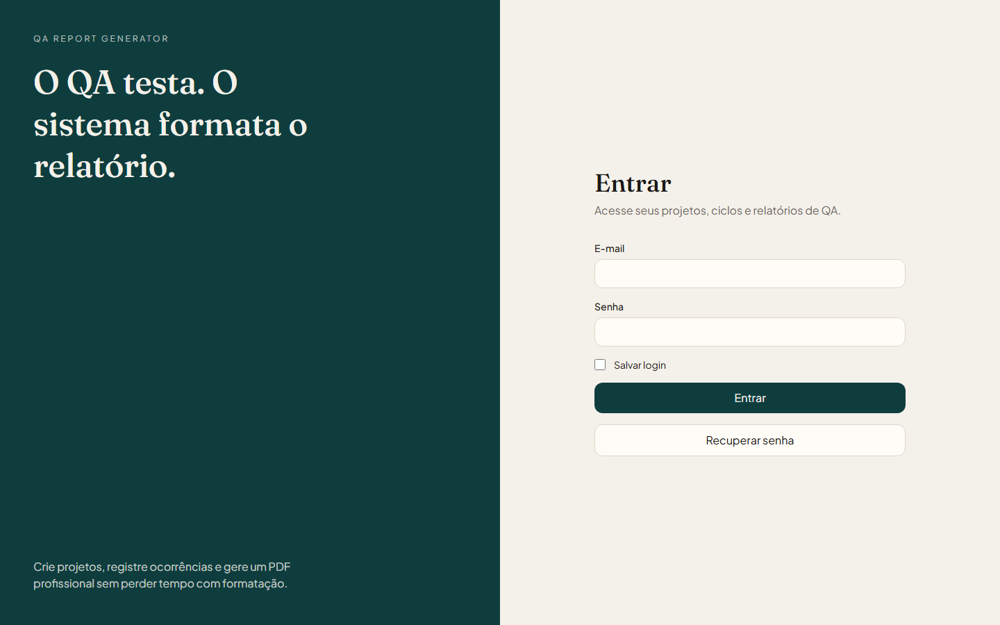
Tela: Login
Depois do login você cai no Dashboard. Ali aparecem totais de projetos, ciclos, ocorrências e relatórios, o ciclo em destaque e atalhos para abrir o ciclo ou gerar o PDF.
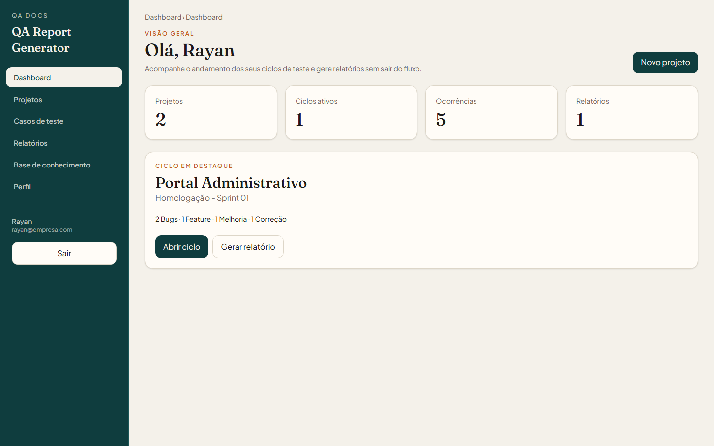
Tela: Dashboard
Em Projetos ficam os sistemas testados. Cada card mostra cliente, nome, descrição e status. Clique no card para abrir o projeto ou em Novo projeto para cadastrar outro.
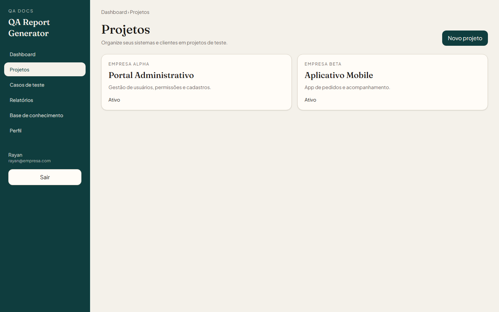
Tela: Projetos
Preencha nome, descrição, cliente, versão, ambiente e status. O Responsável pelo QA vem do seu perfil. Ambiente e status são listas. Versão sobe com Patch, Minor ou Major.
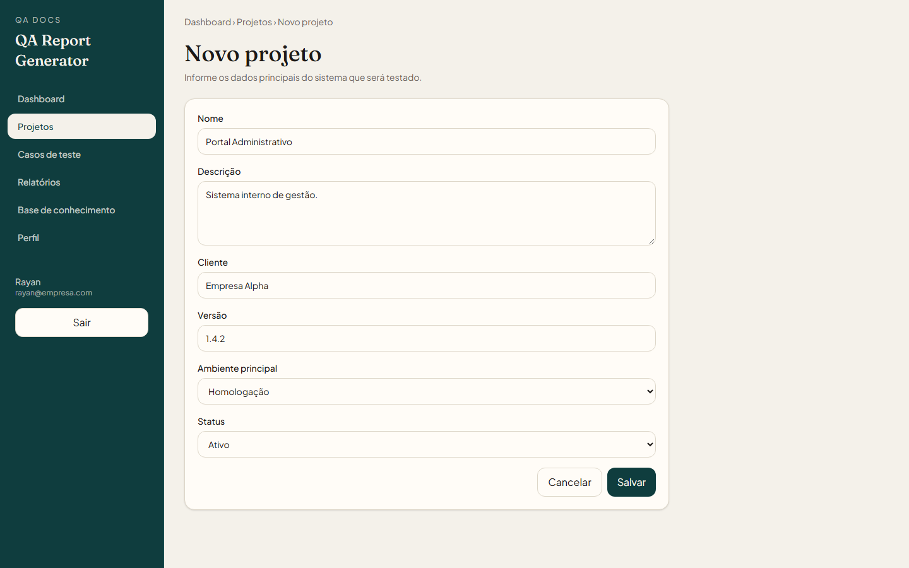
Tela: Novo projeto
No menu Casos de teste ficam os planos do escopo, depois da reunião com o cliente. Cada card é um caso, como Teste de Login. Os cenários (caminho feliz e testes negativos) ficam dentro do caso. Use Novo caso para cadastrar outro.
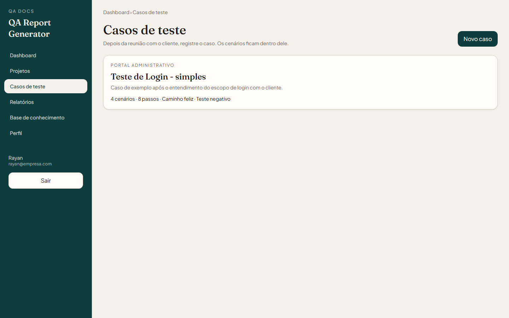
Tela: Casos de teste
Ao abrir o caso você vê a planilha: passos iniciais, caminho feliz e testes negativos. As colunas são cenário, dados, resultado esperado, resultado obtido e comentário. Clique em Gerar Excel para baixar o plano de testes pronto para a execução.
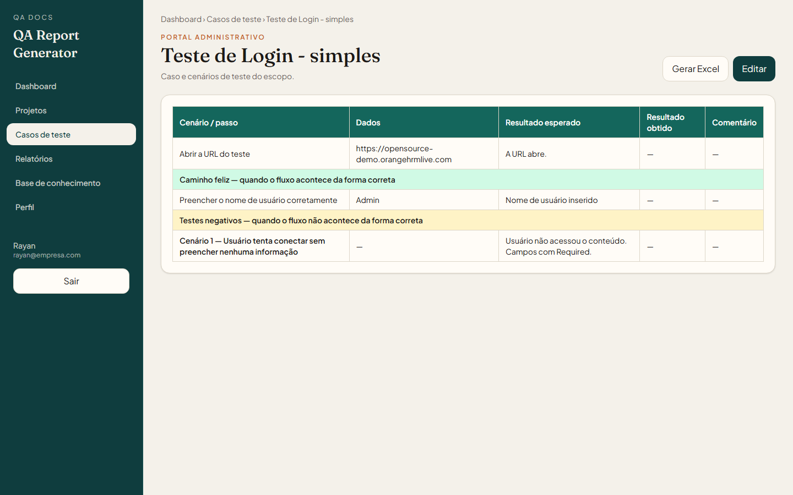
Tela: Caso de teste
Dentro do projeto, crie um ciclo (Homologação, Regressão, Smoke Test). Informe período, versão e ambiente. O nome do ciclo também pode ser escolhido na lista.
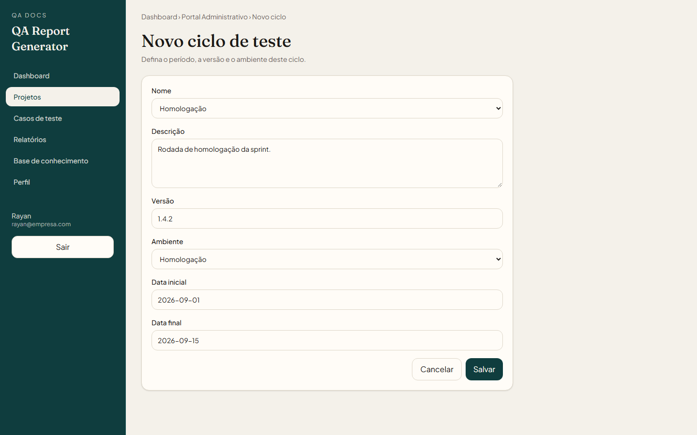
Tela: Novo ciclo
A tela do ciclo lista as ocorrências com tipo, severidade, prioridade e status. Dali você cria ocorrência, gera o relatório PDF ou abre o Acompanhamento.
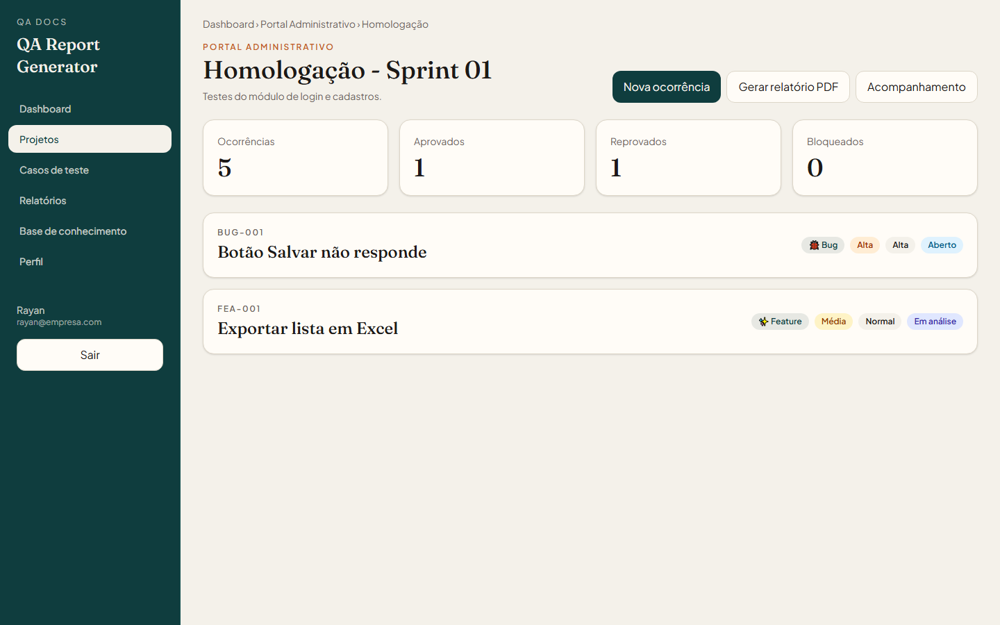
Tela: Ciclo de teste
Escolha o tipo: Bug, Feature, Melhoria ou Correção. Os campos mudam conforme o tipo. Bug pede passos, resultado esperado e encontrado. Anexe prints na área de evidências.
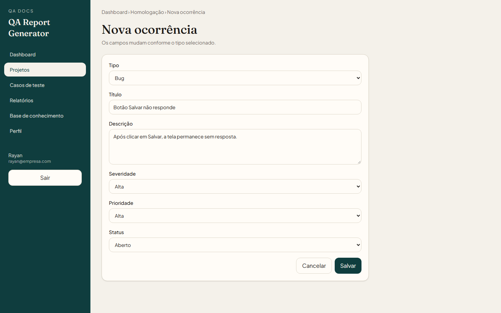
Tela: Nova ocorrência
O acompanhamento separa o que foi resolvido (Aprovado ou Rejeitado) do que ficou pendente. Dá para gerar o PDF das duas listas ou a 2ª versão só com pendências.
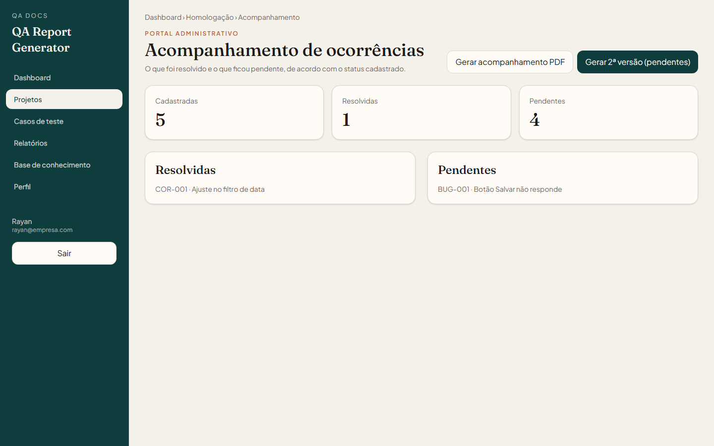
Tela: Acompanhamento
Escolha título, modelo (Profissional, Compacto ou Executivo) e o que entra no PDF: capa, resumo, gráficos, evidências e conclusão. O arquivo segue QA_Projeto_Ciclo_AAAA-MM-DD.pdf.
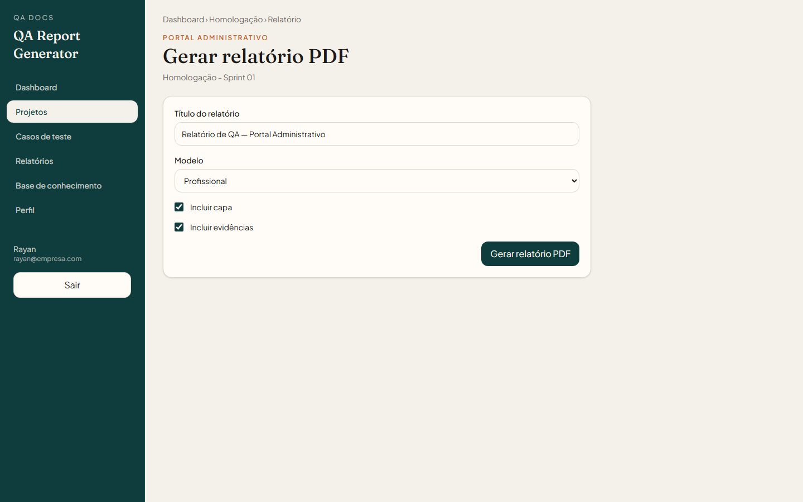
Tela: Gerar relatório
O menu Relatórios guarda as emissões. Use Gerar novamente para voltar à tela do ciclo e emitir outra vez.
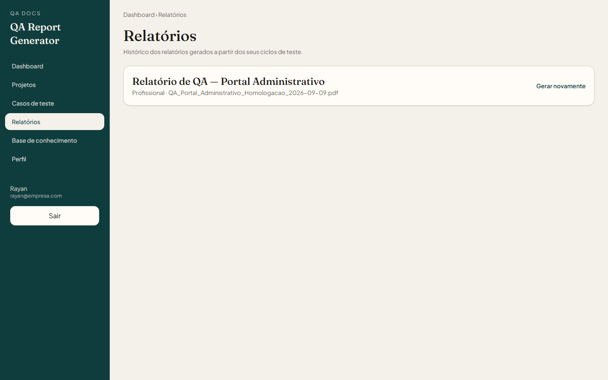
Tela: Histórico de relatórios
No Perfil você altera o nome que aparece como Responsável pelo QA e troca a senha. Na conta do administrador existe a aba Criar conta para liberar acesso a outras pessoas.
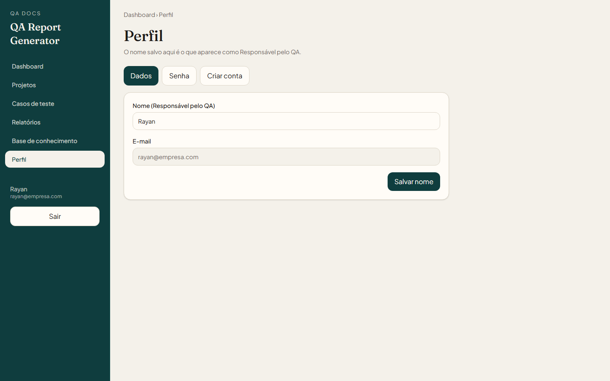
Tela: Perfil